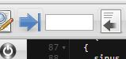

If you close the application without to use this button, your last edits will be lost.
Version 3.2 - By Denis Sureau
The purpose of each button is displayed in a tooltip when the mouse stays over the icon. Some button requires explanations.
To open a file or a project. You may choose between edit the file (Edit) or edit the file and include it directly in the current project (Include). If the extension is .prj, a "Load" button replaces the "Include" button to open the project as current project.
Projects previously opened may be accessed directly from a tooltip (see below).
To save the content under a new filename. To update a file previously loaded, without dialog box, type CTRL-S instead. If the document has the Markdown format (and its file the .md extension), you have just to replace the extension by .html to get it converted, thank to the Markdown-It module included.

This is a set on the toolbar formed by an icon and a text input field. Hovering on the arrow icon brings up a tooltip-menu to jump either to the beginning of the document or at the bottom. List of elements to insert.
Opens a window to display the document in final form, such as a web page if the edited file is in HTML or Markdown.
When you edit the document and save it with CTRL-S the page is updated. You can also click on the preview icon for the update.
 This button is important because, before to close the program, it saves the environment and verifies also that the current document is saved.
This button is important because, before to close the program, it saves the environment and verifies also that the current document is saved.
If you close the application without to use this button, your last edits will be lost.
CTRL-S: Save the content either in the database under the same title, or in the same file. If a database is loaded and the document has been added to it, it is updated too.
CTRL-C: Copy the selection.
CTRL-X: Cut the selection.
CTRL-V: Past the selection.
CTRL-Z: Undo the last edit.
CTRL-Y: Redo what have been cancelled.
CTRL-G: Go to line.
CTRL-F: Find. (F3 for next occurence).
CTRL-H: Find and replace.
TAB: Indent.
SHIFT-TAB: Unindent.
Loading a file is done with a native window.
Click Cancel to return to the editor or Open to open the document.
Saving is done either by clicking the save icon, which opens a custom dialog box allowing you to choose the file name and location, or by pressing CTRL-S to update the existing file.
When you load a document and the current document has not been saved (yellow lightbulb icon), the save window opens first with three options:
A project, since version 4, consists of a directory and an active file, which is the last edited file. Each project has its own active file.
The left panel contains two tabs: the left tab displays the files of a project, the contents of a directory and subdirectories, and the right tab displays the list of projects.
When you click on a project name, its directory is displayed, and its active file replaces the document in the editing window.
To create a project, type the path to a directory in the left panel and click the arrow on the right to display the project's contents. Then click the icon above to add this directory to the project list.
There's an even faster way. Click the icon in the left panel next to the + and - icons. Navigate to the directory and click on a file. This file becomes the active file and is displayed in the editing window. The content of the directory appears on the left, and its name is added to the project list.
To remove a folder from the list, select it—this will display its contents—and click the icon.
© 2015-2026 Denis Sureau